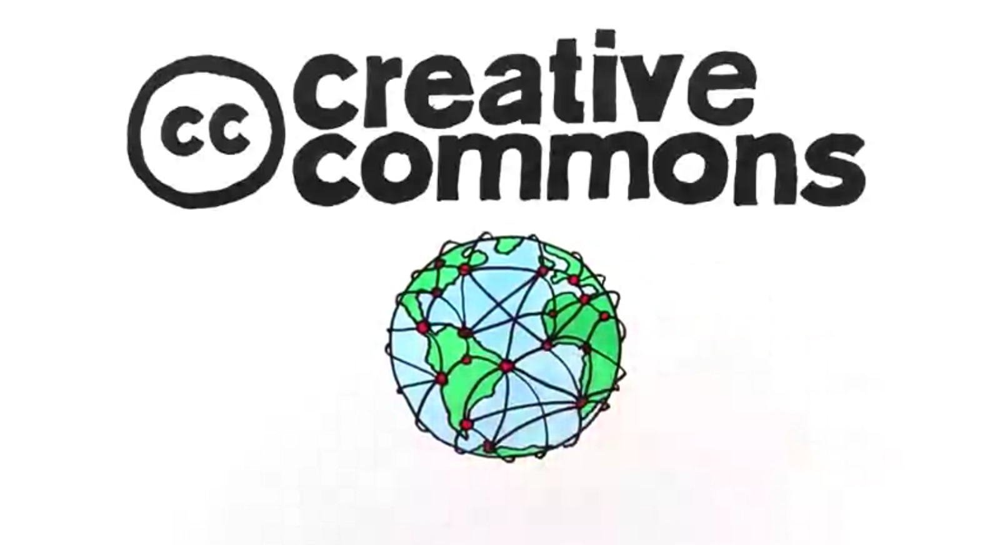

Anatomy of a CC license
Creative Commons Aotearoa New Zealand, Creative Commons world network, CC BY 3.0 NZ
{kind=link}
The three layers of a license
Machine readable
All the licenses have a layer readable by machines (software). This makes easier to detect if a work used in the Web is licesed with a CC license.
Common deeds
This is a summary of the legal text, it has been made to be "human-readable" (easy and direct) and to show the basic conditions of the license. It can't be enforceable in a court.
Legal Code
The legal code is the layer of the design dedicated to the text that could be enforceable in a court or in a infrigement of the license's terms and conditions.
Elements of a CC's license

Attribution
All the Creative Commons licenses has this condition: the work must be attributed to its original creator. Attributing is easy!

ShareAlike
This condition comply to the reuser to share and use the work with the same license, the reuser hasn't the right to change the license!

NonDerivatives
The licenses (two of the six) with this conditions specify that you can't make a derivative work, it means that you can not modify the image. But, when a use is considered an adaptation?

NonCommercial
The three licenses with this condition doesn't allow to use the work for commercial purposes, it means the user can't earn money using or selling the work, whether an individual, a company, an association, etc. Check this CC's resource to read arguments for and against
Suite of CC's licenses
CC's suite is composed by six licenses that mixed the elements seen in the last slide. With the four elements CC has built a suite of licenses that can be useful in many cases.
CC BY

- You can copy and distribute the work in any medium or format.
- You can remix, adapt and build another works upon the licensed work.
- You can use for any purpose, even commercial.
- Attribute the work to its original creator properly, indicating if you made some change and providing a link to the license.
What is the requirement?
CC BY-SA

- You can copy and distribute the work in any medium or format.
- You can remix, adapt and build another works upon the licensed work.
- You can use for any purpose, even commercial.
- Attribute the work to its original creator properly, indicating if you made some change and providing a link to the license.
- You must distribute the derivative work (remix, transformations or another work build upon the work) with the same license.
What is the requirements?
CC BY-NC

- You can copy and distribute the work in any medium or format.
- You can remix, adapt and build another works upon the licensed work.
- Attribute the work to its original creator properly, indicating if you made some change and providing a link to the license.
- You can't use the work for commercial purposes.
What is the requirements?
CC BY-NC-SA

- You can copy and distribute the work in any medium or format.
- You can remix, adapt and build another works upon the licensed work.
- Attribute the work to its original creator properly, indicating if you made some change and providing a link to the license.
- You can't use the work for commercial purposes.
- You must distribute the derivative work (remix, transformations or another work build upon the work) with the same license.
What is the requirements?
CC BY-ND

- You can copy and distribute the work in any medium or format.
- You can use for any purpose, even commercial.
- Attribute the work to its original creator properly, indicating if you made some change and providing a link to the license.
- If you remix, transform o build another work upon the work, you may not distribute the derivative work.
What is the requirements?
CC BY-NC-ND

- You can copy and distribute the work in any medium or format.
- Attribute the work to its original creator properly, indicating if you made some change and providing a link to the license.
- You can't use the work for commercial purposes.
- If you remix, transform o build another work upon the work, you may not distribute the derivative work.
What is the requirements?
Are CC's licenses against the copyright?
«Creative Commons licenses are copyright licenses»
Based on this statement, there is two keys about the licenses that everyone must to know:
- The licenses are applied when the prohibitions of copyright, or similar laws, apply.
- The licenses don't cover other rights as patents, trademarks, privacy and publicity rights.
Creative Commons licenses are built on the copyright, the licenses are supported by legal text based on laws.
So, what makes the licenses?
The licenses are using by creators who want to provide to the public some of the rights reserved by the author.
All Rights Reserved (c) vs Some Rights Reserved
The copyright reserved all the rights for the author, but the author may want to provide another conditions to share and use a work:
Examples
Chris Zabriskie, a musician, share his works freely with the only requirement to credit her work. Check his "Licensing" page
Wired.com shares the works produced by its employees for non commercial purposes and it requires to be attributed. Check the new!
Copyright's exceptions and limitations
The licenses can't affect to the exceptions and limitations to copyright. If your work can be used in a manner allowed by an exception or not covered by the copyright laws, you can't license it with the purpose of reduce, limit or restrict this conditions.
About the Similar Rights (as CC define "neighbouring rights" in the legal code of its licenses), CC's licenses only play a relevant role when it this rights are applied to the work and a specific reuse made by someone.
Remember! CC's licenses can't restrict works that can be used applying the fair use or fair dealing exceptions.
What happens with the public domain??
If a work is in the public domain, it isn't subject to copyright, either because the work reached its copyright term or the author released it into public domain.
Thus, if a work is in the public domain, a CC's license couldn't be
used to reduce, limit or restrict the work.
It's free!
CC0 and Public Domain Mark
Creative Commons provides ways to release content in the public domain and identify the works in the public domain.

With this tool anyone can release a own work into public domain. It can be used to waive the copyright (and database) rights) that you may have under the laws of at least one jurisdiction, although it is free of any restriction in another countries.

It isn't a tool! It's just a mark. It is like a sticker in your work, sticky with the purpose of advise the public that the work is in the public domain. It also makes easier to identify the works, without calculate the years, the copyright term of each country, etc.
Conclusion
Creative Commons offers a suite of licenses that can be adapted to the necessities or interests of anyone, instead the licenses are very easy to use and to understand, thanks to its three layers design.
At the of that presentation, I want to invite you to debate with three main questions.
Are you for or against the NonCommercial and NonDerivative conditions? In what context you would use it? Why?
Slide presentation made by Iván Hernández Cazorla (Ivanhercaz) with reveal.js (JavaScript framework developed by Hakim El Hattab).
Slide presentation available in GitHub